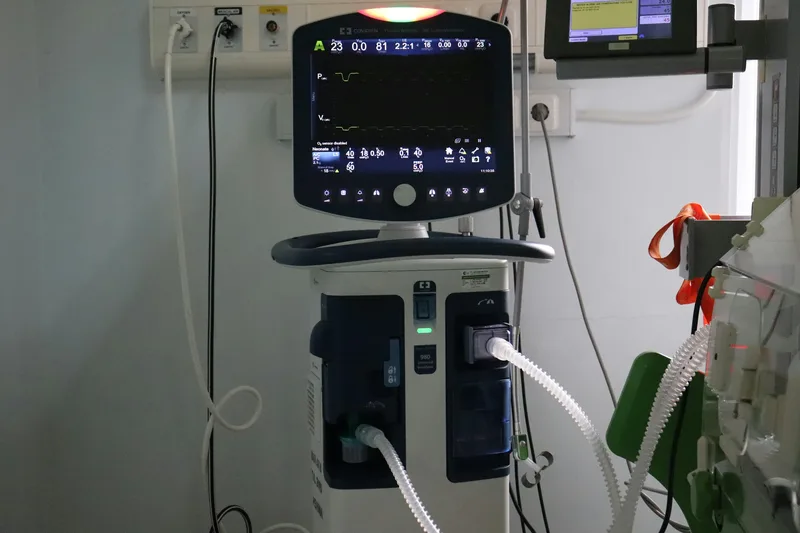

Treatment3 times a week
In-centre haemodialysis
Your blood is cleaned by a dialysis machine and filter while you rest in a reclining chair. Most people come three times a week for about four hours.
- Session
- About 4 hours
- How often
- 3 times a week
- Where
- Chennai or Bengaluru centre
- From
- ₹2,600 per session